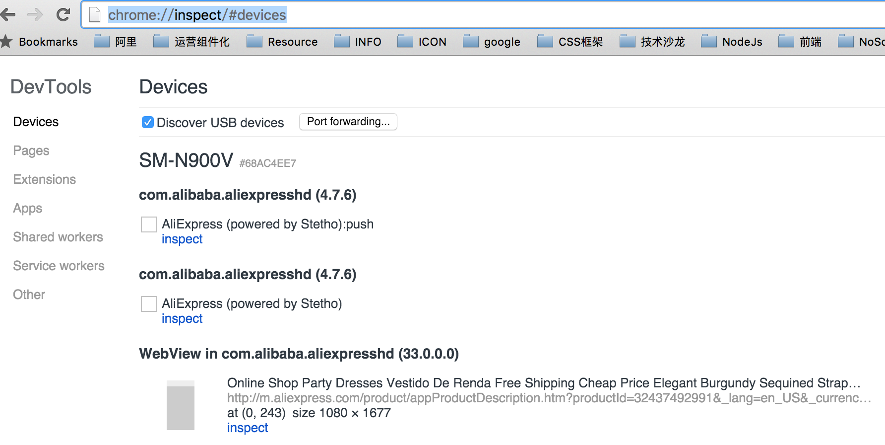

SM-900V Note3升级4.4.4
型号：Note3美版(SM-900v)
Android：4.4.4
基带版本：N900VVRUDNJ6

4.3无法调试APP里面内嵌的WebView页面，同时4.3版本耗电较大，升级的ROM是官方原版ROM
手机通讯录通过360备份，手机备份用SmartFinder for Android锤子出品，MAC底下安卓用户的福音。
APP备份软件(备份和回复) 刷机之后可以用豌豆荚应用安装器，将应用直接安卓回手机。
目前唯一不爽的是无法ROOT升级步骤
- 准备软件 大概用到Odin、官方ROM包，基于线刷模式，知道怎么进入挖煤模式 Note3挖煤模式进入方法：音量上+HOME+电源键，手机震动后松开，这个时候会看到一个类似这个画面说明成功了。

- 软件清单
按照刷机教程里面的线刷模式，选择一体包，刷完后自动重启大概5分钟左右。
真机调试
- 进入设备界面
chrome://inspect/#devices

- 点击inspect